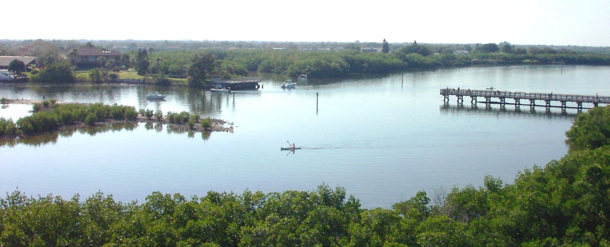
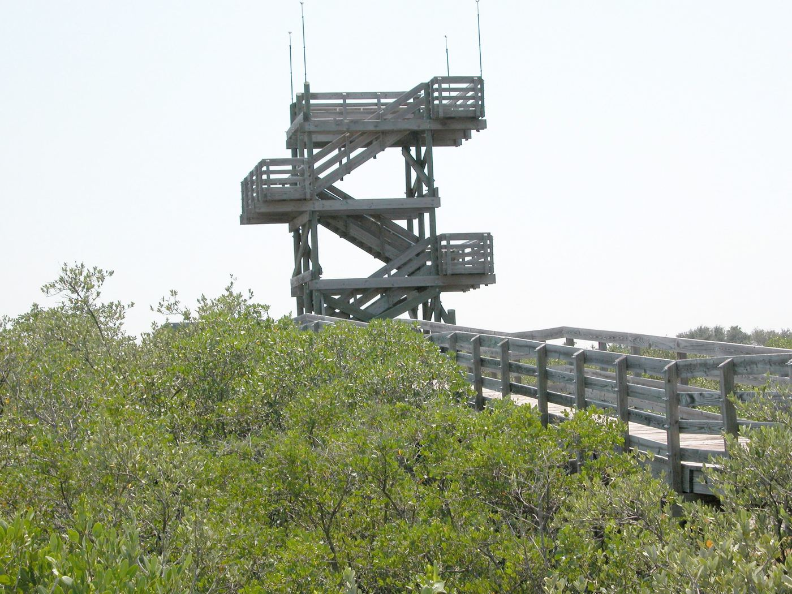
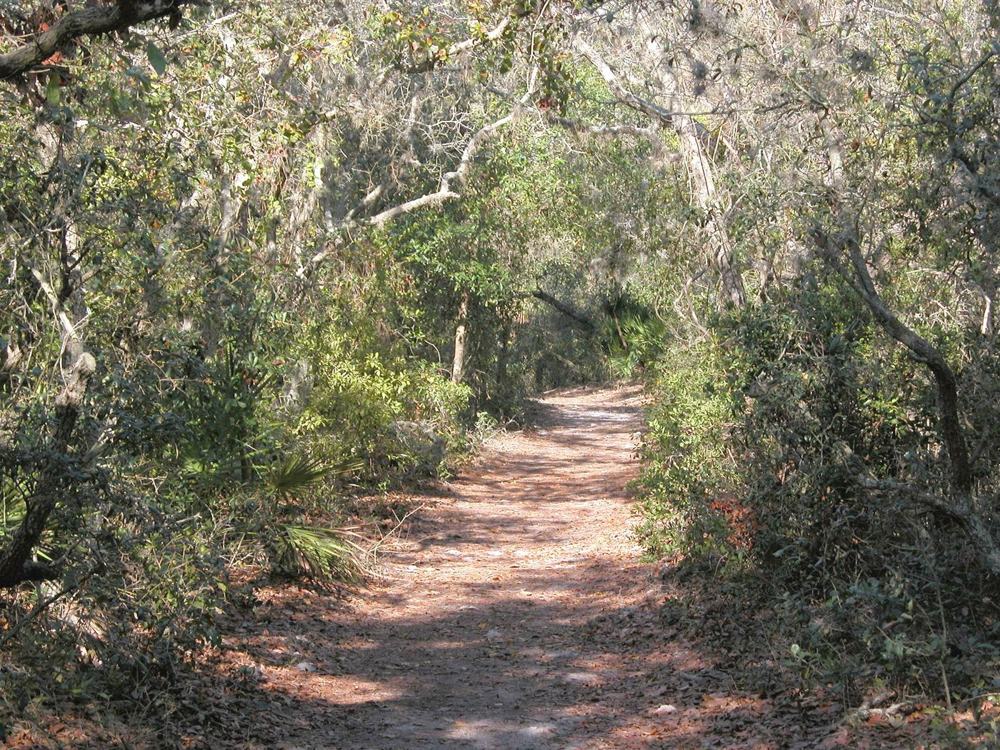
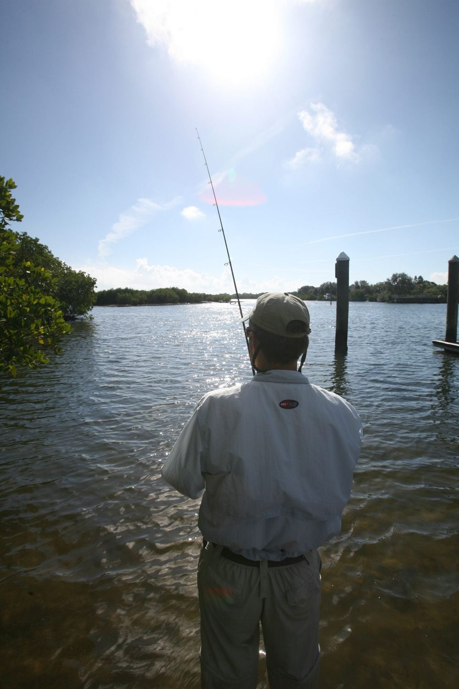
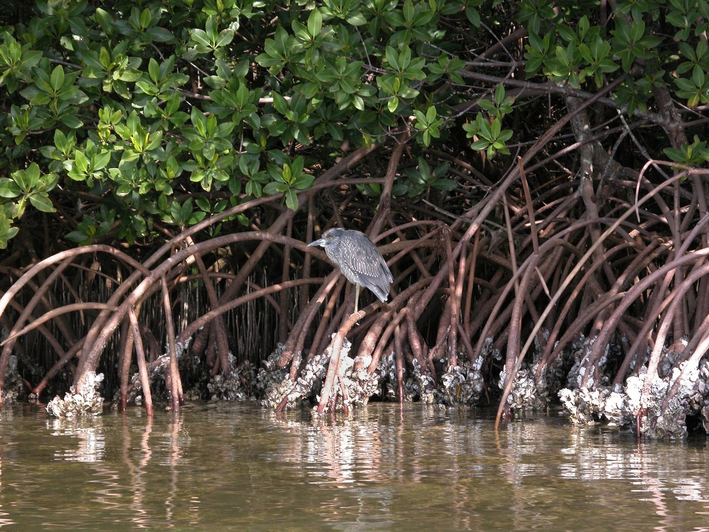
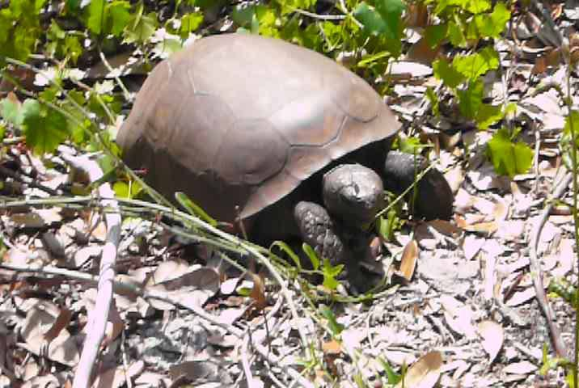
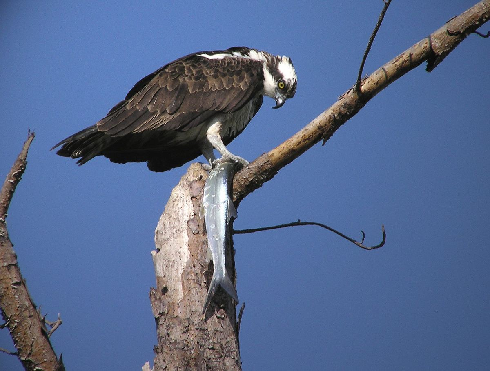
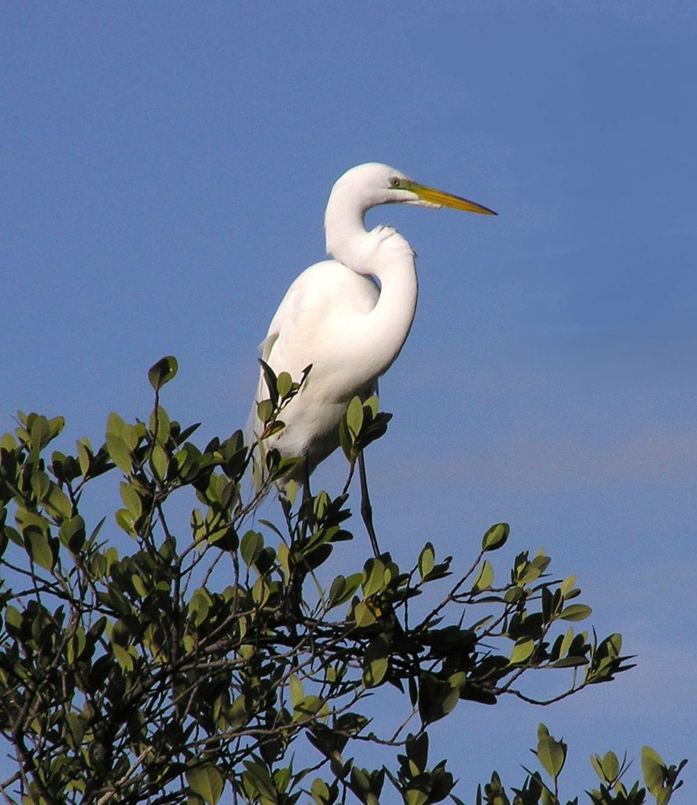
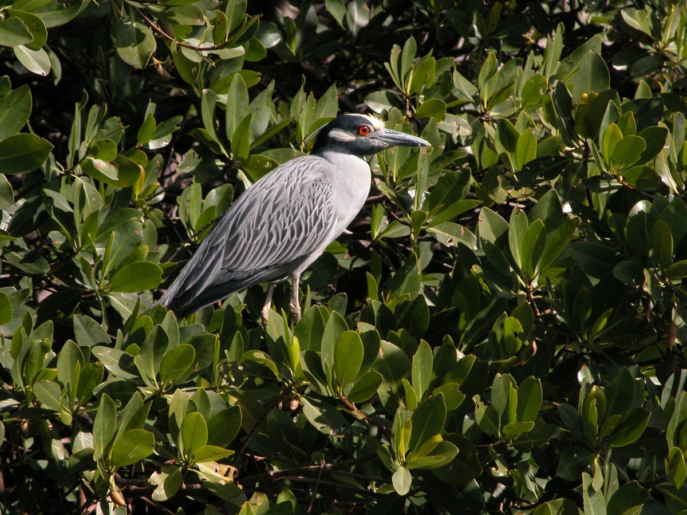

Home / Explore
Explore the preserve
Over 4.7 miles of boardwalks and trails, a paddling trail between the islands and a fishing pier, in a coastal preserve surrounded by the city.

Boardwalks and the observation tower
Almost two miles of handicap-accessible boardwalk and pavement wind through tidal flats and mangrove forest.
The boardwalks look out over saltwater ponds that are often full of mullet and wading birds. A paved path links the two boardwalk loops, passing through pine flatwoods and by the Cultural and Natural History Center.
On the west loop stands a 45-foot observation tower. On a clear day you can see across the preserve to Tampa Bay and the cities of St. Petersburg and Tampa.
Hiking trails
The Boy Scout Loop is a one-mile trail through pine flatwoods and maritime and xeric hammocks, built with help from local Boy Scout troops.
Another 1.7 miles of trail branch off the main loop. Picnic spots along the way sit in the shade of tall oaks. The trails are kept natural to keep our footprint small: footbridges cross the wettest areas, but some stretches are wet in season.

Paddling the South Paddling Trail
A four-mile loop through mangroves and seagrass flats, between the preserve's islands and along the edge of Tampa Bay. Look for reddish egrets, roseate spoonbills and white ibis.
Today's tide
The trail is best at mid to high tide. Many stretches are hard to get through at low tide.
Loading today's tide prediction.
NOAA prediction for Old Port Tampa, about three miles across Old Tampa Bay. Times are local.
- Launch
- Next to the fishing pier at the end of Weedon Drive NE, with restrooms and a canoe washing station.
- Rentals
- Rent a canoe or kayak from ECOmersion on weekdays and weekends. Lessons and private tours are available too.
- Guided
- Archaeology kayak tours with local experts run when scheduled. Check the events page.
Bring on the water
- Your personal flotation device
- A local tide chart
- Closed-toe shoes that can get wet
- A plan left with someone: which trail, and when you'll be back
- Water, sunscreen, a hat and insect repellent

Fishing
The fishing pier at the end of Weedon Drive NE stands close to where a bridge once linked Weedon Island to Snell Island.
Anglers catch sheepshead, jack and snook from the pier, and sea trout, snook and sheepshead around the outlying oyster bars. Restrooms and parking are at the pier.
- Shellfishing is prohibited throughout Tampa Bay for health reasons
- Commercial fishing is prohibited
State of Florida saltwater fishing regulations apply.
Ecosystems and wildlife
What was once a true island at high tide is now a low-lying peninsula ringed by small islands, on the northwest shore of Old Tampa Bay.
Most of the preserve is aquatic and wetland, including miles of mosquito ditches dug in the late 1950s. About 1,100 acres are dry uplands, where Indian mounds and old dune ridges rise above the flats. More than half the preserve lies north of Gandy Boulevard.
As a natural floodplain, the preserve helps protect nearby neighborhoods from flooding, storm surge and coastal erosion. It's also habitat for oysters, stingrays and even small sharks.
The preserve is owned by the State of Florida and managed by Pinellas County under a state-approved management plan.




